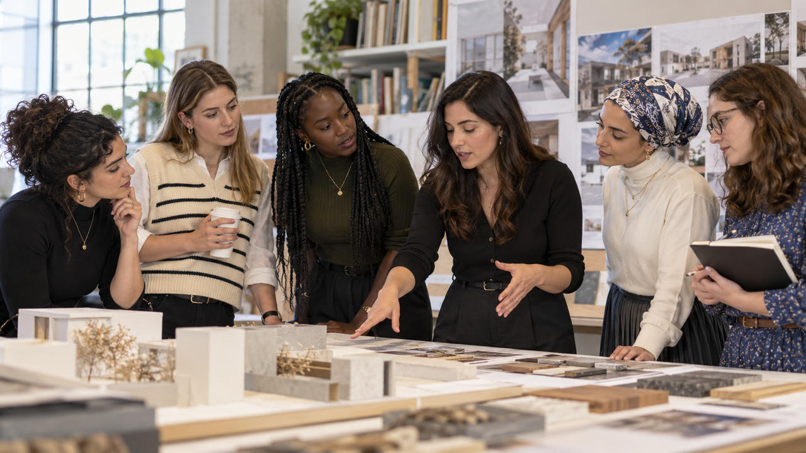

ABOUT
A chance to discover what's out there.
We connect young Jewish women with professional experiences, applied learning, and people who are willing to share what they know.

Why we exist
Curiosity deserves a chance.
It's easier to understand your next step when you've seen a profession from the inside. We're building those experiences with Jewish life in mind.
Behind the initiative
Built by an engineer and community organizer.
Our founder brings mechanical engineering, U.S. Army civilian engineering work, and Jewish community organizing experience. No government endorsement is implied.
Where we stand
Growing carefully.
The Jewish Mutual is an initiative in development. Proposed activities are not confirmed. Independent nonprofit recognition and fiscal sponsorship have not been secured.